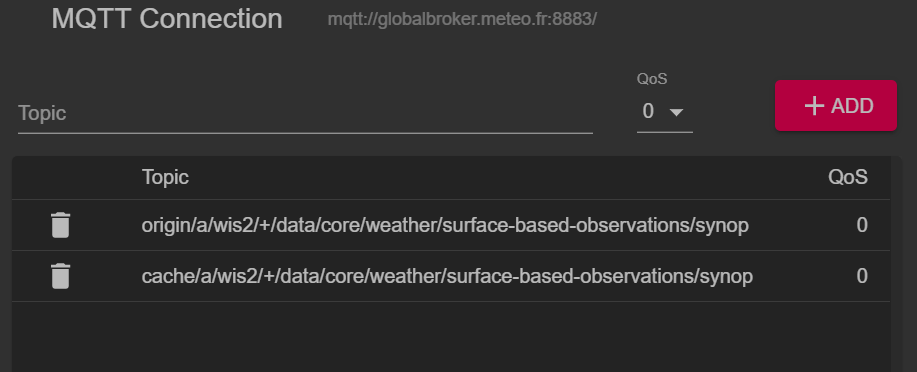

Connessione a WIS2 tramite MQTT
Risultati di apprendimento
Alla fine di questa sessione pratica, sarai in grado di:
- connetterti al Broker Globale WIS2 utilizzando MQTT Explorer
- esaminare la struttura dei topic WIS2
- esaminare la struttura dei messaggi di notifica WIS2
Introduzione
WIS2 utilizza il protocollo MQTT per pubblicizzare la disponibilità di dati meteorologici/climatici/idrici. Il Broker Globale WIS2 si sottoscrive a tutti i Nodi WIS2 nella rete e ripubblica i messaggi che riceve. La Global Cache si sottoscrive al Broker Globale, scarica i dati nel messaggio e poi ripubblica il messaggio sul topic cache con un nuovo URL. Il Catalogo Globale di Scoperta pubblica i metadati di scoperta dal Broker e fornisce un'API di ricerca.
Questo è un esempio della struttura del messaggio di notifica WIS2 per un messaggio ricevuto sul topic origin/a/wis2/br-inmet/data/core/weather/surface-based-observations/synop:
{
"id": "59f9b013-c4b3-410a-a52d-fff18f3f1b47",
"type": "Feature",
"version": "v04",
"geometry": {
"coordinates": [
-38.69389,
-17.96472,
60
],
"type": "Point"
},
"properties": {
"data_id": "br-inmet/data/core/weather/surface-based-observations/synop/WIGOS_0-76-2-2900801000W83499_20240815T060000",
"datetime": "2024-08-15T06:00:00Z",
"pubtime": "2024-08-15T09:52:02Z",
"integrity": {
"method": "sha512",
"value": "TBuWycx/G0lIiTo47eFPBViGutxcIyk7eikppAKPc4aHgOmTIS5Wb9+0v3awMOyCgwpFhTruRRCVReMQMp5kYw=="
},
"content": {
"encoding": "base64",
"value": "QlVGUgAA+gQAABYAACsAAAAAAAIAHAAH6AgPBgAAAAALAAABgMGWx1AAAM0ABOIAAAODM0OTkAAAAAAAAAAAAAAKb5oKEpJ6YkJ6mAAAAAAAAAAAAAAAAv0QeYA29WQa87ZhH4CQP//z+P//BD////+ASznXuUb///8MgAS3/////8X///e+AP////AB/+R/yf////////////////////6/1/79H/3///gEt////////4BLP6QAf/+/pAB//4H0YJ/YeAh/f2///7TH/////9+j//f///////////////////v0f//////////////////////wNzc3Nw==",
"size": 250
},
"wigos_station_identifier": "0-76-2-2900801000W83499"
},
"links": [
{
"rel": "canonical",
"type": "application/bufr",
"href": "http://wis2bra.inmet.gov.br/data/2024-08-15/wis/br-inmet/data/core/weather/surface-based-observations/synop/WIGOS_0-76-2-2900801000W83499_20240815T060000.bufr4",
"length": 250
}
]
}
In questa sessione pratica imparerai come utilizzare lo strumento MQTT Explorer per configurare una connessione client MQTT a un Broker Globale WIS2 e visualizzare i messaggi di notifica WIS2.
MQTT Explorer è uno strumento utile per navigare ed esaminare la struttura dei topic per un determinato broker MQTT e rivedere i dati pubblicati.
Nota che MQTT è principalmente utilizzato per la comunicazione "macchina-macchina"; ciò significa che normalmente ci sarebbe un client che analizza automaticamente i messaggi man mano che vengono ricevuti. Per lavorare con MQTT in modo programmatico (ad esempio, in Python), puoi utilizzare librerie client MQTT come paho-mqtt per connetterti a un broker MQTT ed elaborare i messaggi in arrivo. Esistono numerosi software client e server MQTT, a seconda dei tuoi requisiti e dell'ambiente tecnico.
Utilizzo di MQTT Explorer per connettersi al Broker Globale
Per visualizzare i messaggi pubblicati da un Broker Globale WIS2 puoi utilizzare "MQTT Explorer" che può essere scaricato dal sito web di MQTT Explorer.
Apri MQTT Explorer e aggiungi una nuova connessione al Broker Globale ospitato da MeteoFrance utilizzando i seguenti dettagli:
- host: globalbroker.meteo.fr
- porta: 8883
- nome utente: everyone
- password: everyone

Clicca sul pulsante 'ADVANCED', rimuovi i topic preconfigurati e aggiungi i seguenti topic a cui sottoscriverti:
origin/a/wis2/#

Note
Quando configuri le sottoscrizioni MQTT puoi utilizzare i seguenti caratteri jolly:
- Livello singolo (+): un carattere jolly a livello singolo sostituisce un livello di topic
- Multi-livello (#): un carattere jolly multi-livello sostituisce più livelli di topic
In questo caso origin/a/wis2/# si sottoscriverà a tutti i topic sotto il topic origin/a/wis2.
Clicca su 'BACK', poi 'SAVE' per salvare i dettagli della connessione e della sottoscrizione. Quindi clicca su 'CONNECT':
I messaggi dovrebbero iniziare ad apparire nella tua sessione MQTT Explorer come segue:

Ora sei pronto per iniziare a esplorare i topic WIS2 e la struttura dei messaggi.
Esercizio 1: Esaminare la struttura dei topic WIS2
Usa MQTT per navigare nella struttura dei topic sotto i topic origin.
Question
Come possiamo distinguere il centro WIS che ha pubblicato i dati?
Clicca per rivelare la risposta
Puoi cliccare sul lato sinistro della finestra in MQTT Explorer per espandere la struttura dei topic.
Possiamo distinguere il centro WIS che ha pubblicato i dati guardando il quarto livello della struttura del topic. Ad esempio, il seguente topic:
origin/a/wis2/br-inmet/data/core/weather/surface-based-observations/synop
ci dice che i dati sono stati pubblicati da un centro WIS con l'ID centro br-inmet, che è l'ID centro per l'Instituto Nacional de Meteorologia - INMET, Brasile.
Question
Come possiamo distinguere tra i messaggi pubblicati dai centri WIS che ospitano un gateway GTS-to-WIS2 e i messaggi pubblicati dai centri WIS che ospitano un nodo WIS2?
Clicca per rivelare la risposta
Possiamo distinguere i messaggi provenienti dal gateway GTS-to-WIS2 guardando l'ID centro nella struttura del topic. Ad esempio, il seguente topic:
origin/a/wis2/de-dwd-gts-to-wis2/data/core/I/S/A/I/01/sbbr
ci dice che i dati sono stati pubblicati dal gateway GTS-to-WIS2 ospitato dal Deutscher Wetterdienst (DWD), Germania. Il gateway GTS-to-WIS2 è un tipo speciale di pubblicatore di dati che pubblica dati dal Global Telecommunication System (GTS) a WIS2. La struttura del topic è composta dalle intestazioni TTAAii CCCC per i messaggi GTS.
Esercizio 2: Esaminare la struttura dei messaggi WIS2
Disconnettiti da MQTT Explorer e aggiorna le sezioni 'Advanced' per modificare la sottoscrizione come segue:
origin/a/wis2/+/data/core/weather/surface-based-observations/synopcache/a/wis2/+/data/core/weather/surface-based-observations/synop

Note
Il carattere jolly + viene utilizzato per sottoscriversi a tutti i centri WIS.
Riconnettiti al Broker Globale e attendi che appaiano i messaggi.
Puoi visualizzare il contenuto del messaggio WIS2 nella sezione "Value" sul lato destro. Prova a espandere la struttura del topic per vedere i diversi livelli del messaggio fino a raggiungere l'ultimo livello ed esaminare il contenuto di uno dei messaggi.
Question
Come possiamo identificare il timestamp di pubblicazione dei dati? E come possiamo identificare il timestamp di raccolta dei dati?
Clicca per rivelare la risposta
Il timestamp di pubblicazione dei dati è contenuto nella sezione properties del messaggio con una chiave pubtime.
Il timestamp di raccolta dei dati è contenuto nella sezione properties del messaggio con una chiave datetime.

Question
Come possiamo scaricare i dati dall'URL fornito nel messaggio?
Clicca per rivelare la risposta
L'URL è contenuto nella sezione links con rel="canonical" e definito dalla chiave href.
Puoi copiare l'URL e incollarlo in un browser web per scaricare i dati.
Esercizio 3: Esaminare la differenza tra i topic 'origin' e 'cache'
Assicurati di essere ancora connesso al Broker Globale utilizzando le sottoscrizioni ai topic origin/a/wis2/+/data/core/weather/surface-based-observations/synop e cache/a/wis2/+/data/core/weather/surface-based-observations/synop come descritto nell'Esercizio 2.
Cerca di identificare un messaggio per lo stesso ID centro pubblicato sia sui topic origin che cache.
Question
Qual è la differenza tra i messaggi pubblicati sui topic origin e cache?
Clicca per rivelare la risposta
I messaggi pubblicati sui topic origin sono i messaggi originali che il Broker Globale ripubblica dai Nodi WIS2 nella rete.
I messaggi pubblicati sui topic cache sono i messaggi per i dati che sono stati scaricati dalla Global Cache. Se controlli il contenuto del messaggio dal topic che inizia con cache, vedrai che il link 'canonical' è stato aggiornato con un nuovo URL.
Ci sono più Global Cache nella rete WIS2, quindi riceverai un messaggio da ciascuna Global Cache che ha scaricato il messaggio.
La Global Cache scaricherà e ripubblicherà solo i messaggi che sono stati pubblicati nella gerarchia di topic ../data/core/....
Conclusione
Congratulazioni!
In questa sessione pratica, hai imparato:
- come sottoscriverti ai servizi del Broker Globale WIS2 utilizzando MQTT Explorer
- la struttura dei topic WIS2
- la struttura dei messaggi di notifica WIS2
- la differenza tra dati core e raccomandati
- la struttura dei topic utilizzata dal gateway GTS-to-WIS2
- la differenza tra i messaggi del Broker Globale pubblicati sui topic
originecache